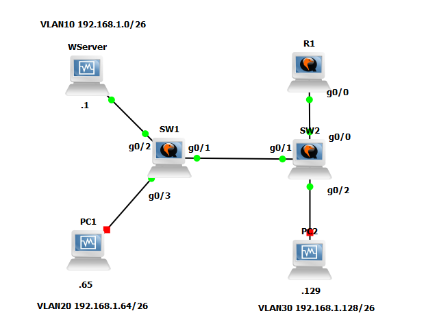

Projetos
Lab GNS3 com VLAN's e Active Directory
Topologia de rede prática com VLANs e Active Directory integrada com VMs Windows em GNS3. Segmentação, trunking e inter-VLAN routing
Game Streaming Caseiro

Troubleshooting de Client Isolation em rede doméstica e configuração de game streaming de baixa latência. Budget-friendly e prático